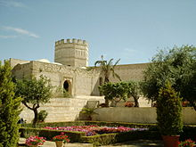
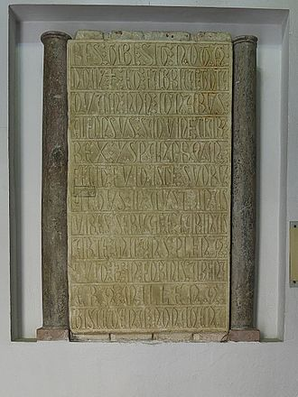
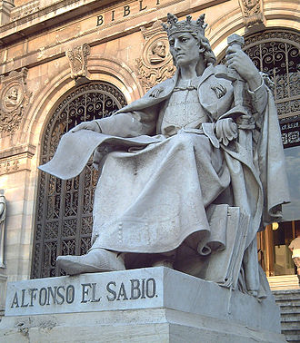
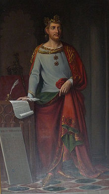
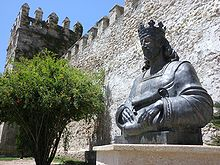
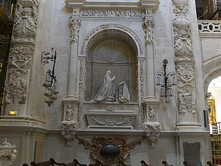
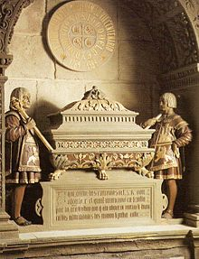

| Etapa como infante |
| Hijo primogénito de Fernando III el Santo y de Beatriz de Suabia (hija de Felipe, antiguo aspirante al trono imperial alemán, y nieta del emperador Federico I Barbarroja), Alfonso nació en la ciudad de Toledo el 23 de noviembre de 1221, día de la festividad de san Clemente.7 Tuvo tres hermanas y seis hermanos.8 El 21 de marzo de 1222 fue jurado heredero en la ciudad de Burgos.8 Para encargarse de su crianza fue designada ama Urraca Pérez y ayo García Fernández de Villamayor, que había sido mayordomo de la reina Berenguela y cuya segunda esposa era Mayor Arias de Limia.9 Con ambos se crio en Villaldemiro y en Celada del Camino.9a10 Parte de su infancia la pasó en las propiedades que tenían sus cuidadores en Allariz (Galicia), donde aprendería el galaicoportugués1 que utilizó en las Cantigas compuestas en su scriptorium y, al menos diez de ellas, seguramente debidas al mismo rey.12 Ya en la Corte de Toledo, recibió una esmerada educación en múltiples campos, a la vez que empezó a relacionarse con los herederos de las principales familias nobles de los reinos de Castilla y de León. |
| |
Campaña en Andalucía y batalla de Jerez (1231) |
| En 1231, mientras Fernando III recorría las principales ciudades del reino de León después de haber tomado posesión de él, algunos historiadores señalaron que el soberano envió a su hijo el infante Alfonso, pero para dicho año este contaba con apenas nueve años de edad y se hallaba en Salamanca, por lo que el tal Infante Alfonso era hermano de Fernando III, a quien sí comisionó para atacar a los reinos musulmanes de Córdoba y Sevilla, siendo acompañado por los magnates Álvaro Pérez de Castro el Castellano y Gil Manrique.1 Dicho hermano era el infante Alfonso de Molina, hijo del difunto Alfonso IX de León.b Y que debido a la menoridad del hijo del Rey, el infante Alfonso, quien sí habría estado presente en la batalla era en realidad el hijo del rey Fernando III |
| |
Mandó a don Alvar de Castro, el Castellano, que fuese con él, para guardar el infante y por cabdillo de la hueste, ca el infante era muy moço e avn non era tan esfforçado, e don Alvar Pérez era omne deferido e muy esforçado.14 |
|

|
|
Vista del Alcázar de Jerez de la Frontera. La batalla de Jerez, librada en 1231, supuso la derrota de las tropas del rey musulmán Ibn Hud.
|
|
| Desde Salamanca y pasando por Toledo, donde se les unieron cuarenta caballeros toledanos, se dirigieron hacia Andújar, y desde allí, se encaminaron a devastar la tierra de Córdoba, y posteriormente, al municipio cordobés de Palma del Río, donde exterminaron a todos los habitantes y tomaron la localidad, dirigiéndose a continuación hacia el reino de Sevilla y hacia Jerez de la Frontera, donde instalaron el campamento cristiano en las cercanías del río Guadalete.15 El emir Ibn Hud, que había reunido un numeroso ejército dividido en siete cuerpos, se interpuso con él entre el ejército cristiano y la ciudad de Jerez de la Frontera, obligando a las tropas de Alfonso a combatir. Durante la batalla que se libró a continuación, conocida como la batalla de Jerez, el ejército de Alfonso derrotó a las tropas musulmanas, a pesar de la superioridad numérica de estos últimos. Alfonso X el Sabio se refirió posteriormente a la batalla de Jerez, librada en el año 1231, y en la que Álvaro Pérez de Castro el Castellano acaudilló las huestes cristianas, del siguiente modo: |
Conviene que sepades los que esta estoria oyredes que la cosa del mundo que más quebrantó a los moros, por que el Andaluzía ovieron a perder e la ganaron los christianos dellos, fue esta cabalgada de Xerez, ca de guisa fincaron quebrantados los moros, que non pudieron después auer el atreuimiento nin el esfuerço que ante avíen contra los christianos, tamaño fue el espanto e el miedo que tomaron desa vez.15
|
| Después de su victoria en la batalla de Jerez, Álvaro Pérez de Castro se dirigió al reino de Castilla y entregó al infante Alfonso a su padre el rey, que se hallaba en la ciudad de Palencia. |
|
En 1235 falleció su madre, la reina Beatriz, y en 1240 su padre le puso casa propia, sostenida por rentas leonesas y andaluzas.16 En 1242 participó en el aplastamiento de la rebelión de Diego López de Haro.16
|
| |
| Conquista de los reinos de Murcia y Sevilla |
|
| Cumplida la mayoría de edad a los diecinueve años, Alfonso utiliza oficialmente el título de heredero y comienza a ejercer actividades de gobierno en el reino de León. Poco después, afronta diversas operaciones militares: |
|

|
|
Vista del Alcázar de Jerez de la Frontera. La batalla de Jerez, librada en 1231, supuso la derrota de las tropas del rey musulmán Ibn Hud.
|
|
- En 1243, debido a la enfermedad que sufría su padre, el infante se hizo cargo de la campaña de conquista del reino de Murcia (1243-1245), con la ayuda de ciertos caudillos musulmanes del territorio.17 La taifa temía ser absorbida por el vecino reino granadino, y su señor decidió solicitar la protección de los castellanoleoneses, que le enviaron tropas y una embajada en abril de 1243.18 La mayoría de los caudillos regionales pactaron con los castellanoleoneses en Alcaraz, pero Mula, Lorca y Cartagena, rehusaron hacerlo y fueron subyugadas, las dos primeras en la primavera del 1244 y la tercera a comienzos de 1245.17 En el transcurso de estas operaciones firmó el Tratado de Almizra (26 de marzo de 1244) con Jaime I de Aragón, su futuro suegro, estableciendo las fronteras entre ambos reinos.19
- En 1246, puede que participase en las largas operaciones de asedio de Jaén, que concluyeron con su conquista.20
- En 1246-1247 participó en la guerra civil portuguesa, apoyando a Sancho II de Portugal frente a su rival y hermano Alfonso de Bolonia.21 Tras vencer a las fuerzas portuguesas cerca de Leiría, abandonó el reino para participar en la conquista de Sevilla.22
- En 1247-1248 colaboró en primera línea en la conquista de Sevilla.20 A causa de la quebrantada salud de su padre, Alfonso se ocupó del reparto entre los miembros de la hueste de los nuevos territorios adquiridos, así como de distintas labores de gobierno.
- En 1248 fue conquistado el castillo Alicante según la tradición, aunque no está documentada la presencia del infante aquel año en el reino de Murcia. Al poco, serían entregadas las villas y fortalezas del Vinalopó, a modo de infantado, a su hermano, el infante Manuel de Castilla, siendo creado el Señorío de Villena.
|
| Dos años antes de la toma de la ciudad de Sevilla se habían celebrado los esponsales del infante Alfonso con la infanta Violante de Aragón, hija de Jaime I de Aragón, aunque hasta el 29 de enero de 1249 no se celebró la boda en la ciudad de Valladolid.18 La reina estuvo a punto de ser repudiada por estéril pero quedó embarazada tras reposar en la ciudad de Alicante tras su conquista en 1248. Matrimonio de Estado, no impidió que Alfonso siguiese manteniendo relaciones con Mayor Guillén de Guzmán, con la que tuvo una hija.18 |
| El 31 de mayo de 1252 falleció Fernando III el Santo, y el 1 de junio fue proclamado rey el infante Alfonso, que reinaría como Alfonso X de Castilla y de León.23 |
| |
| Política interior |
| El reinado de Alfonso X fue un reinado reformador, que iniciaría el proceso que desembocaría en el Estado Moderno de época de los Reyes Católicos. Fundamentó, asimismo, la supremacía de Castilla entre los reinos peninsulares. |

|
|
Noven, moneda de vellón, acuñada en La Coruña durante el reinado de Alfonso X. La leyenda dice en latín "Moneda de Castilla y de León".
|
|
| |
| Medidas económicas |
| El principal desarrollo económico en el sector primario se dio en la ganadería ovina trashumante, impulsado por la anexión castellana del valle del Guadalquivir.24 A mediados del siglo se definieron los trazados de las principales cañadas reales (la leonesa, la segoviana, la soriana y la manchega).24 La principal medida económica del reinado fue la creación del Honrado Concejo de la Mesta de pastores, que reunió a todos los pastores de León y de Castilla en una asociación nacional y les otorgó importantes prerrogativas y privilegios tales como eximirles del servicio militar, testificar en los juicios, derechos de paso y pastoreo, etc.25 Se desconoce el año exacto de la fundación, pero debió tener lugar entre 1230 y 1263.26 |
| En las ciudades crecieron las cofradías, antecedentes de los gremios, pese a la oposición del rey.27 |
| Los objetivos económicos principales del rey fueron el fomento del comercio y la homogeneización de los territorios que gobernaba.28 En lo que respecta al primero, trató de allanar las transacciones internas mediante la reducción de los impuestos que las gravaban, al tiempo que establecía aranceles para las importaciones y exportaciones para aumentar los ingresos de la Corona.28 Se fijaron las poblaciones por las que pasaban el comercio exterior.28 Se favoreció la implantación de un sistema común de pesos y medidas.28 Durante el reinado se crearon veinticinco nuevas ferias, que solían durar una semana y coincidían con fiestas religiosas.29 |
| En cuanto a la política fiscal, el objetivo del monarca fue el rápido incremento de los ingresos de la Corona, sumida a finales del reinado de su padre en una quiebra práctica.30 Para ello estableció nuevos impuestos a las actividades económicas pujantes, como el comercio o la ganadería trashumante y trató de obtener frecuentes servicios (contribuciones extraordinarias), en especial a partir de 1264.31 Los servicios, a diferencia de su precedente, el pedido, afectaba a la nobleza y al clero, y suscitaron el descontento de estos.32 El aumento general de la presión fiscal originó oposición también en la oligarquía urbana y fue uno de los motivos de la rebelión nobiliaria de 1272.33 |
| |
| Reformas legislativas |
| Alfonso X pretendía renovar y unificar los diversos fueros que regían sus dominios.34 Para lograr ese objetivo, el primer paso fue la redacción del Fuero Real para las ciudades del país. Esta unificación jurídica formaba parte del intento general de homogeneización de los territorios reales que emprendió Alfonso.35 |
| El Espéculo sería la primera redacción de un código legal unificado, en la línea del Fuero Real; fue un compendio legal de Castilla, que se envió a los núcleos urbanos como obra de referencia.36 Sería promulgado en 1255. Sin embargo, al año siguiente llegó una embajada de la ciudad italiana de Pisa ofreciendo a Alfonso su apoyo para optar al trono imperial. El rey castellano decidió entonces que su equipo de juristas elaborara un nuevo código legal ampliado, basado en el Espéculo y en el Derecho romano-canónico. Se trata de las Siete Partidas,36 redactadas entre 1256 y 1265, y de las que se ha llegado a decir37 que son, por su calidad y trascendencia interna y exterior, equiparables en el mundo del Derecho a lo que fue la obra de Santo Tomás de Aquino para la teología. |
|

|
|
Estatua de Alfonso X el Sabio en la escalinata de entrada de la B. N. E., en Madrid (J. Alcoverro, 1892)
|
|
| Alfonso no solo promulgó nuevas leyes, sino que además creó nuevos cargos, como el de adelantado o el de almirante, reflejo de la creciente importancia de la flota castellana.38 El cargo de Adelantado mayor de Andalucía se creó en 1253 para la Andalucía Bética conquistada.39 A continuación se creó el equivalente para Murcia.39 Este nuevo cargo sustituyó además a los merinos mayores en Castilla y León.39 En la década de 1260 se unieron los adelantamientos de Andalucía y Murcia (que volvieron a separarse en la década siguiente) y desaparecieron los adelantados de Castilla y León.39 Se creó también la figura del adelantado de Álava y Guipúzcoa.39 Su función era esencialmente jurídica: eran el juez principal y de apelación del territorio que se les asignaba y representaban al rey en su ausencia en algunos actos como la recepción de castillos o la toma de juramentos.40 |
| Fue el primer monarca castellano que utilizó las Cortes, reunidas por primera vez en León en 1188, como instrumento habitual de gobierno.41 A las sesiones, muy frecuentes en el reinado de Alfonso, acudían los tres estamentos: nobleza, clero y tercer estado (procuradores de villas y ciudades), a diferencia de lo que ocurría con su precedente, la curia regia, de la que estaba excluido este último.42 El objetivo primordial de la convocatoria de Cortes fue la obtención de subsidios extraordinarios, puesto que la consecución de nuevos fondos preocupó constantemente al rey.43 |
| El rey era, en opinión de Alfonso, la «cabeza del reino», «vicario de Dios» aunque independiente en su poder temporal de la Iglesia, y por tanto trató de reforzar todo lo posible el poder de la Corona.44 El rey era el legislador del reino y el juez supremo.45 También el jefe del Ejército y la cabeza de la Administración Pública, así como quien decidía la política exterior del reino.45 Alfonso no se limitó, sin embargo, a aplicar las antiguas leyes y a ejercer sus tradicionales prerrogativas, sino que fue un reformador, un innovador legislativo.45 |
| Las reformas legislativas del rey produjeron el rechazo de elementos ciudadanos y nobiliarios, cuyos privilegios se veían amenazados por la creciente intervención del Estado en las legislaciones privativas.34 Este rechazo fue una de las causas de la gran rebelión nobiliaria de 1272, que obligó al rey a ceder y permitir que algunas localidades recuperasen sus antiguos fueros, desechando el real.34 |
| |
| Actividad repobladora |
| Sin duda, la labor más importante en este ámbito emprendida por este monarca fue la repoblación del antiguo reino de Sevilla, que permitió consolidar las conquistas de Fernando III.46 Los objetivos de las repoblaciones alfonsinas eran dobles: económicas (mejorar la explotación del territorio) y militar (proteger puntos vulnerables).46 |

|
Estatua de Alfonso X el Sabio en la escalinata
de entrada de la B. N. E., en Madrid (J. Alcoverro, 1892)
|
|
Nada más rendirse la ciudad hispalense, se procedió al reparto de las casas de su casco urbano y de las tierras de alrededor entre los soldados de las huestes reales y nobiliarias, así como entre gentes procedentes de todos los rincones de la Corona de Castilla. Este modelo de repoblación, que vació de musulmanes aquellas localidades que habían sido tomadas por fuerza o que capitularon tras un sitio (caso de las principales ciudades del valle del Guadalquivir), convivió con el mantenimiento de la población autóctona en diferentes zonas. Muchas localidades serranas de Jaén y Córdoba, y otras de las campiñas y llanuras, se rindieron a los castellanos mediante capitulación, por la cual estos se hacían cargo de sus fortalezas y del cobro de impuestos, mientras que los mudéjares conservaban cierta autonomía política y religiosa. |
| Este sistema no fue viable después de la revuelta mudéjar de 1264. La expulsión que se produjo de musulmanes en las tierras andaluzas y el agotamiento demográfico de los reinos de Castilla y de León tuvo como consecuencia una bajísima densidad de población en el sur, que no pudo ser paliada por la labor repobladora de Alfonso X en la comarca del Guadalete y en la bahía de Cádiz, ni por las iniciativas señoriales en la frontera con Granada. Finalmente, los repobladores se concentrarían en las grandes ciudades del valle del Guadalquivir. |
| Los puntos de mayor peligro se encomendaron a las órdenes militares: la de Santiago obtuvo Segura, Estepa y Medina Sidonia (tras la desaparición de la efímera Orden de Santa María de España, fundada por Alfonso); la de Calatrava recibió Martos y Alcaudete; y la de Alcántara, Morón.47 El rey trató también de potenciar los concejos, el principal de los cuales en la zona era el de Sevilla.48 |
| En Murcia la situación fue similar, si bien no hubo expulsión de mudéjares tras la rebelión de 1264.49 En la región convivieron repobladores castellanos, aragoneses (un 45 % en algunas comarcas), ultramontanos (franceses e italianos, principalmente), mudéjares, comunidades judías.49 Las zonas más pobres quedaron casi despobladas, y parte de la población, tanto mudéjar como cristiana, abandonó la |
| También impulsó Alfonso X la llamada repoblación interior, con la fundación de villas y polas (pueblas) nuevas en regiones del norte e interior peninsular.50 Con ello pretendía reforzar la jurisdicción realenga en zonas en las que tradicionalmente habían predominado los señoríos de distinto tipo.51 Así, podemos enumerar las siguientes: |
- Aguilar de Campoo en Castilla (1255).
- Cangas de Tineo en Asturias (1255).52
- Villa Real, actual Ciudad Real, fundada en Pozuelo de don Gil en 1255. Se estableció con el fin de contrarrestar el poder que la Orden de Calatrava ejercía en la comarca.50
- Santa Marta de Ortigueira en Galicia (1255).52
- Tolosa y Villafranca de Ordicia y Segura en Guipúzcoa (1256).52
- Treviño en Burgos (1254).52
|
| |
| La revuelta mudéjar |
| Artículos principales: Revuelta mudéjar de 1264-1266 y Conquista de Murcia (1265-66). |
| Ya al principio del reinado, en 1253, Alfonso tuvo que afrontar rebeliones en los territorios recién incorporados a Castilla.5 Se alzaron contra el rey Tejada, cerca de Sevilla, así como Lebrija, Arcos, Medina-Sidonia y Jerez; esta última resistió a los castellanos hasta 1261 |
|

|
|
Retrato imaginario de Alfonso X, expuesto en el Alcázar de Segovia
|
|
| A los pocos años de haber renovado la sumisión a Castilla, que ya habían ofrecido a Fernando III, los pequeños territorios tributarios de Niebla y Jerez de la Frontera vieron cómo Alfonso X les arrebataba por la fuerza de las armas la poca autonomía que les restaba.55 Jerez fue conquistado tras un mes de asedio, a finales de 1260 o comienzos del año siguiente.55 Niebla fue conquistada a continuación, en febrero de 1262, con facilidad; su señor marchó a Sevilla, donde vivió hasta su muerte.56 La población musulmana del reino fue expulsada y se llevó a cabo en él otro proceso repoblador, similar al de Sevilla.55 Ese mismo año comenzó también la repoblación del Puerto de Santa María y de Cádiz.57 |
| Estas conquistas, así como otros incumplimientos de las capitulaciones acordadas en su día con los musulmanes andaluces y murcianos que se habían rendido sin resistencia durante las campañas de Fernando III, provocó una sublevación concertada entre la población mudéjar del sur peninsular, apoyada por el rey de Granada (1264).57 El alzamiento comenzó en mayo de 1264 en Jerez, de cuyo alcázar se apoderaron los rebeldes, y se extendió pronto a otras localidades como Arcos, Lebrija o Medina-Sidonia.58 En Murcia el levantamiento comenzó en Lorca.58 La rebelión fue aplastada en casi toda Andalucía en seis meses, mientras que en Murcia, abandonada a su suerte, fue necesaria la intervención combinada de tropas castellanas y aragonesas, al mando del propio Jaime I de Aragón.59 El rey aragonés rindió Murcia en enero de 1266, acontecimiento que marcó el principio del fin de la rebelión en la región.58 Alfonso se centró entonces en Jerez, el principal foco de la rebelión, que recuperó en octubre de ese mismo año, tras reconquistar otras plazas menores.59 Esta revuelta tuvo como consecuencia la expulsión o huida de muchos mudéjares andaluces, y el despoblamiento de vastas áreas en la Campiña del Guadalquivir.60 |
| |
| Relación con la Iglesia |
| Alfonso utilizó a la Iglesia como instrumento de gobierno.61 Algunas figuras del alto clero recibieron importantes cargos gubernamentales y actuaron como embajadores regios, tanto ante el papa como en otras cortes.62 Uno de los principales eclesiásticos del reinado fue Remondo, arzobispo de Sevilla, estrecho colaborador del rey.62 |
| Por otro lado, Alfonso trató de apropiarse de parte de las rentas eclesiásticas, lo que suscitó el disgusto de los prelados y los acercó a la nobleza descontenta con la fiscalidad regia.62 Logró, empero, conservar las tercias reales que había obtenido del papa Inocencio IV su padre Fernando para contribuir a sufragar las guerras contra los musulmanes.63 Esta fue una de las principales fuentes de ingresos para la hacienda real.63 Cuando renunció definitivamente a la corona imperial alemana, el papa del momento, Gregorio X, le compensó con la décima parte de las rentas eclesiásticas del reino durante seis años.64 No consiguió, sin embargo, que ninguno de los papas de la época lo respaldase decididamente en sus pretensiones al trono alemán.63 |
| |
| Relación con la nobleza |
La relación del rey con la nobleza pasó por diversas etapas, aunque en general, esta reforzó su poderío durante el reinado de Alfonso.65 En los repartos de tierras en la Andalucía conquistada y en Murcia, la alta nobleza, los «ricoshombres», obtuvieron grandes extensiones.65 Se extendió también el régimen señorial: los grandes propietarios acapararon cada vez más competencias jurisdiccionales.
os dos principales linajes del reinado de Alfonso eran los de Lara y Haro, rivales.66 Otras importantes familias de la alta nobleza eran las de los Castro, Guzmán —una de cuyos miembros, Mayor, era amante del rey—, Manzanedo, Meneses, Fróilaz, Saldaña, Cameros, Girón, Trastámara y Limia.67 Todas ellas gozaban de amplios dominios que les aportaban abundantes rentas, disfrutaban de los principales cargos en la corte y estaban a menudo emparentadas.68 Parte de la alta nobleza se opuso a las medidas económicas y políticas del soberano, que buscaban reforzar el poder de la Corona.68
Las primeras desavenencias entre el rey y los nobles acontecieron en 1255, con la sublevación de Diego López III de Haro, sostenido por Jaime I de Aragón y por el hermano de Alfonso, el infante Enrique.69 La rebelión, centrada en el Señorío de Vizcaya y en Andalucía, fue aplastada.70 La siguiente rebelión nobiliaria relevante fue la de 1270, tras un período de conciliación entre los nobles y el monarca.70 |
| |
| Relaciones con la familia real |
| La actuación de los hermanos del rey fue, en general, perjudicial para él.71 Enrique y Fadrique se rebelaron contra él; al segundo lo hizo ejecutar.71 También lo hizo Felipe en 1272.71 Sancho llegó a arzobispo de Toledo, pero murió al poco.71 El benjamín varón de la familia, Manuel, fue un fiel compañero de Alfonso hasta que, al final del reinado, se rebeló contra él en apoyo de su sobrino Sancho.72 De sus hermanos de padre (hijos de la segunda esposa de Fernando III), solo Leonor desempeñó un papel importante en el reino, al casarse con el heredero inglés, Eduardo Plantagenet.72 |
| |
| Política exterior |
| |
| La cuestión del Algarve |
Durante todo su reinado, Alfonso X se tituló «rey del Algarve». El origen de esta atribución es oscuro. Según algunos autores, como el marqués de Mondéjar, el Algarve le habría sido donado por Sancho II de Portugal en pago por el apoyo que el castellano le había proporcionado en 1246 contra aquel que terminaría apartándolo del gobierno, su hermano Alfonso III de Portugal. Para otros, como José Mattoso,73 la reivindicación del rey castellano sobre las tierras al sur de Lisboa reflejaban el deseo de ver reconocida su superioridad feudal sobre el monarca portugués; también se rastrean los derechos de Alfonso X en el Algarve obtenidos por el rey de Niebla. Sea como fuere, tras la subida al trono de Alfonso X de Castilla, se inició una guerra entre ambos reyes por el control del Algarve. El conflicto finalizó en 1253 al acordar el matrimonio del rey portugués con una hija,22 ilegítima, del rey Alfonso X, Beatriz, y la entrega de un usufructo sobre el Algarve en beneficio del rey castellano hasta que el hijo de ese matrimonio alcanzara los siete años de edad.7475 Alfonso recibía además el servicio vitalicio de cincuenta caballeros de la región y la posibilidad de conceder tierras en ella.22
En 1260, Alfonso X añadió a sus títulos el de rey de Algarve. Pero en abril de 1263, firmó un tratado, ratificado en 1264,76 por el que cedió el usufructo del Algarve a su nieto Dionisio, heredero del rey portugués, a cambio de un vasallaje militar.777879 Con el Tratado de Badajoz de 1267 se liquidó este tributo militar y se fijaron las fronteras en el río Guadiana.79 El rey castellano siguió empleando el título de rey de Algarve, pero solo por la referencia al territorio de la antigua taifa de Niebla.75 Por su parte, el rey Alfonso III empezó a emplear el título de rey de Portugal y de Algarve desde marzo de 1268.80 El motivo de la cesión de Alfonso fue su deseo de mejorar las relaciones con el reino vecino.81 |
| |
| Relación con Navarra |
| Las relaciones con Navarra fueron tirantes al comienzo del reinado de Alfonso.82 Teobaldo I de Navarra, de origen francés, había orientado al reino hacia Francia.82 Temiendo un ataque del rey castellano, el reino firmó una alianza con Aragón.82 Alfonso, por su parte, se concertó con Inglaterra en la primavera de 1254: a cambio de ceder sus posibles derechos a la Gascuña, objetivo de los ingleses, estos se comprometieron a colaborar con el rey castellano en los asuntos navarros.82 Para reforzar la liga, el príncipe Eduardo de Inglaterra, heredero del trono, desposó a una de las hermanas de Alfonso, Leonor en Burgos ese mismo año.82 Las relaciones castellano-navarras mejoraron luego, durante el reinado de Teobaldo II, que hizo de su reino casi un protectorado castellano.83 También lo hicieron las de Castilla con Aragón, y en 1256 Alfonso firmó un tratado de amistad con el monarca aragonés, Jaime I el Conquistador.83 |
| |
| Acercamiento a Francia |
| En 1266, Alfonso decidió estrechar los vínculos con Francia desposando a su hijo y heredero, Fernando, con una hija del monarca francés, Luis IX.81 La boda entre Fernando y Blanca de Francia se celebró a finales de noviembre de 1269 en Burgos.81 |
| |
| Rivalidad con Granada y guerras con los benimerines |
El primer acto de Alfonso contra las potencias musulmanas del sur de la península y el Magreb fue la creación de una base naval en Alcanate en el verano de 1260-84 Seguidamente, los castellanos ocuparon y saquearon durante varios días el puerto de Salé en septiembre de ese mismo año.85
Las relaciones de Castilla con Granada fueron en general tirantes, con inestables pactos que daban paso a conflictos casi continuos.86 Si Alfonso trataba de minar el poder de los nazaríes mediante el apoyo a algunos arraeces, el emir granadino hacía lo propio atizando a la nobleza levantisca castellana.86 En 1264 el soberano granadino sostuvo a los rebeldes muladíes contra Alfonso.58 En 1265 las dos partes alcanzaron un acuerdo pasajero que no puso fin a las tensiones.86 Al morir Muhammad ibn Nasr, su hijo Muhammad II suscribió un nuevo concierto con Alfonso mediante el cual se comprometió a pagarle trescientos mil maravedíes anuales; este pacto tampoco puso fin a la enemistad entre los dos reinos.86
Esta volvió a ser evidente en 1275, cuando los benimerines invadieron la península alentados por el soberano nazarí.86 Los magrebíes conquistaron Tarifa y Algeciras y batieron a los castellanos en la batalla de Écija.87 Luego corrieron las comarcas de Jaén y Sevilla, antes de retirarse de nuevo al sur del estrecho.87 Alfonso firmó una tregua con ellos, que concluyó en 1277, cuando los benimerines talaron el Aljarafe y cercaron Córdoba.87 Los concejos andaluces solicitaron la paz, que el sultán benimerí concedió.88 En 1278 Alfonso trató de conquistar Algeciras para estorbar el paso del enemigo a la península, pero su flota fue derrotada por la de los benimerines y el cerco acabó en fracaso.88
Alfonso y su hijo Sancho siguieron hostigando al reino nazarí y consiguieron que su soberano se aviniese a retomar el pago de parias, pero esto no resolvió el problema, que resurgió en los últimos años del reinado.89 |
| |
| El fecho del Imperio |
Artículo principal: Fecho del Imperio |
| En 1256 Alfonso X recibía una embajada de la república de Pisa en Soria.90 Venía para ofrecerle su apoyo para ser candidato a «emperador» y «rey de romanos», cargo vacante desde la muerte de Guillermo de Holanda.91 Y es que Alfonso pertenecía, por ser hijo de Beatriz de Suabia, a la familia alemana de los Hohenstaufen, que alegaba ser la depositaria de los derechos al Imperio.92 Alfonso X aceptó la oferta pisana y procedió, mediante el envío de diplomáticos, dinero e incluso tropas a las ciudades gibelinas de Italia, a recabar apoyo para su aspiración imperial.93 |
|

|
|
Estatua de Alfonso X junto al Castillo de San Marcos de El Puerto de Santa María.
|
|
Alfonso encontró muchas dificultades en este empeño. En la propia Castilla, muchos nobles expresaron su desacuerdo por las exigencias extraordinarias de dinero y soldados. En Soria, los nobles locales llegaron al motín (la llamada conjuración de Soria). En el exterior, el papa Gregorio X se opuso a las pretensiones de Alfonso, interesado en debilitar el Imperio. Por otra parte estaba el complejo sistema de elección del emperador, que correspondía a siete príncipes electores.94 Estos hicieron dos votaciones: en la de enero de 1257 escogieron al candidato inglés, en la de abril de ese año, al castellano.94 Tres de ellos votaron por Ricardo (hermano de Enrique III de Inglaterra), mientras que cuatro lo hicieron por Alfonso (1257).94 Sin embargo, el inglés viajó rápidamente a Aquisgrán, donde fue coronado junto a la tumba del primer emperador medieval de Europa Occidental, Carlomagno, en mayo, aunque no logró la sanción papal.94 El castellano, en cambio, permaneció en sus reinos, con lo que perdió su oportunidad de hacer valer su elección como rey de Romanos. Nunca pisaría tierra germana. En los años posteriores Alfonso desembolsó enormes cantidades de dinero para sufragar sus gestiones para ser coronado emperador por el papa, así como para apoyar militar y financieramente a sus partidarios en Italia y Alemania. En 1271 Alfonso se aprestaba a acudir a Italia a acaudillar a sus partidarios y obtener por fin la corona imperial y al año siguiente falleció su rival, Ricardo.95 |
Sin embargo, la elección de Gregorio X en 1271 frustró definitivamente sus aspiraciones imperiales.95 Desgraciadamente para el monarca castellano, la Iglesia romana fue alargando el pleito hasta que Alfonso se vio obligado a renunciar en 1275, tras una entrevista en Beaucaire con el papa Gregorio X.96 Esta ya había negado en 1272 la validez de la elección de Alfonso y había reconocido como emperador a Rodolfo I de Habsburgo en 1274.97
Detrás de este contencioso pudo estar la intención del Rey Sabio de verse reconocido como superior por los otros reyes peninsulares, recuperando la vieja supremacía teórica que había tenido su antepasado Alfonso VII el Emperador.98 Según otros autores, la aspiración imperial de Alfonso se debía a su deseo de crear un imperio mediterráneo que le permitiese luego emprender una cruzada y conquistar Tierra Santa.99 |
| |
| El fecho de Allende |
En los comienzos de su gobierno, Alfonso X retomó un viejo proyecto de su padre, el de continuar la Reconquista allende el estrecho de Gibraltar. Finalizó las grandes atarazanas de Sevilla para construir la flota necesaria para la invasión de África, nombró un almirante mayor de la mar, y consiguió de Roma la autorización para predicar la Cruzada en Castilla, lo que significaba poder recaudar dinero a cambio de beneficios espirituales. Se nombraron incluso cargos episcopales para las futuras diócesis magrebíes, y se iniciaron contactos diplomáticos con distintos reyes del Norte de África.
No obstante todos estos preparativos, no se emprendió la invasión a gran escala del Magreb. Todo se redujo a unas cuantas expediciones de rapiña y a la captura de alguna plaza costera aislada. La incursión más conocida fue la de Salé, puerto del norte de África saqueado en el verano de 1260 por la flota del almirante Juan García de Villamayor (hijo del ayo de Alfonso X). Pero el objetivo principal de esta Cruzada, Ceuta, permaneció en manos islámicas.
|

|
|
Alfonso X el Sabio.
|
|
| |
| Los difíciles últimos años |
Artículo principal: Sitio de Algeciras (1278) |
| En la última etapa de su vida, Alfonso X tuvo que afrontar diversos fracasos y desgracias, incluyendo la muerte de su heredero (1275), rebeliones de nobles y en el seno de su propia familia, fracaso del intento de conquista de Algeciras (1278), invasiones benimerines. |
| |
| La rebelión nobiliaria de 1272 |
La gran revuelta nobiliaria de 1272 se urdió en una gran reunión de los magnates del reino que se celebró en Lerma a principios de 1271.100 En ella participó asimismo el infante Felipe, hermano del rey, además de representantes de algunas ciudades.101
En 1272 la gran mayoría de los nobles, encabezados por el infante Felipe (hermano de Alfonso X) y Nuño González de Lara, plantearon una serie de reivindicaciones al monarca.102 Fundamentalmente, los rebeldes deseaban eliminar las medidas fiscales del rey y la vuelta a los fueros tradicionales, más laxos en lo que se refiere a las obligaciones de las poblaciones y los vasallos para con el soberano.103 Consideraban que los agentes del rey cometían abusos y deseaban que Alfonso dejase de crear nuevas poblaciones en las tierras de realengo y solicitase menos contribuciones extraordinarias.101 A la rebelión se unió parte del clero y de la oligarquía urbana, también descontentos por la política fiscal regia.104 La reconciliación entre el rey y los alzados se debió a la mediación de la reina Violante y a las concesiones del soberano.105
Al hacer Alfonso oídos sordos a estas protestas, los aristócratas se «desnaturaron» y se exiliaron en Granada junto a sus ejércitos feudales, provocando graves daños a su paso. Entre 1272 y 1273 el infante heredero, Fernando de la Cerda, negoció la reconciliación con los rebeldes en un difícil contexto de guerra contra nazaríes y benimerines. Finalmente, el príncipe logró la paz con ellos y con Granada. |
| |
| Conjura de 1277 |
| Apenas resuelta la rebelión de 1272, Alfonso hubo de afrontar una nueva amenaza: la conjura de su hermano el infante Fadrique y de un destacado noble, Simón Ruiz de los Cameros, en 1277.105 Aunque los motivos de la conspiración no están claros, esta pudo deberse a la enfermedad que por entonces sufría el rey y a la corta edad del heredero, que pudo animar al infante a tratar de hacerse con el trono.106 Al reponerse el rey de la enfermedad, mandó ajusticiar a los principales confabulados.106 |
| |
| La problemática sucesión |
| El primogénito y heredero al trono, Fernando de la Cerda, murió en 1275 en Villa Real, cuando se dirigía a hacer frente a una nueva invasión norteafricana en Andalucía.107 |
|

|
|
Capilla Real de la catedral de Sevilla
|
|
|

|
|
Urna sepulcral que contiene las entrañas de Alfonso X el Sabio, rey de Castilla y León (catedral de Murcia)
|
|
De acuerdo con el derecho consuetudinario castellano, en caso de muerte del primogénito en la sucesión a la Corona, los derechos debían recaer en el segundogénito, Sancho; sin embargo, el derecho romano privado introducido en Las Siete Partidas establecía que la sucesión correspondía a los hijos de Fernando de la Cerda.108
El rey se inclinó en principio por satisfacer las aspiraciones de Sancho,109 que se había distinguido en la guerra contra los invasores islámicos en sustitución de su difunto hermano. Pero luego el rey, presionado por su esposa Violante y por Felipe III de Francia, tío de los llamados «infantes de la Cerda» (hijos de Fernando), se vio obligado a compensar a estos.110 Sancho, conocido por la historiografía como el Bravo por su fuerte carácter, se enfrentó a su padre cuando este pretendió crear un reino en Jaén para el mayor de los hijos del antiguo heredero, Alfonso de la Cerda.111
|
| Finalmente, el infante Sancho y buena parte de la nobleza del reino se rebelaron en 1282.104 Sancho convocó Cortes en Valladolid, que depusieron a su padre y le reconocieron por rey.112 La mayoría de los notables del reino, desde la reina Violante o el infante Manuel hasta gran parte de la nobleza, el clero y los concejos, tomaron partido por Sancho.112 Alfonso, enfermo, se refugió en Sevilla.112 Nuevamente, las innovaciones fiscales y legislativas fueron los motivos que arguyeron los rebeldes, que deseaban una vuelta a los antiguos usos.113 La rebelión supuso el desbaratamiento de la política fiscal y monetaria de Alfonso. |
| Alfonso, sin embargo, conservó el favor del papa, a la sazón Martín IV, y del rey de Francia.112 Al reponerse de la enfermedad a finales de 1282, maldijo a su hijo, a quien desheredó en su testamento, y ayudado por sus antiguos enemigos los benimerines empezó a recuperar su posición.115 Cuando cada vez más nobles y ciudades rebeldes iban abandonando la facción de Sancho, murió el Rey Sabio en Sevilla, el 4 de abril de 1284.116 Sancho, a pesar de haber sido desheredado, fue coronado en Toledo el 30 de abril de 1284. |